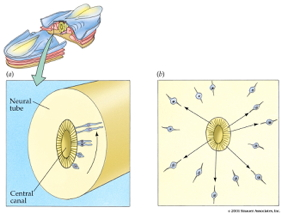

Topic 10 Evolution and development
Evolution
Public attitudes toward…
“Human beings, as we know them, developed from earlier species of animals.”
2006 data
Figure 10.1: Figure 1 from Miller, Scott, and Okamoto (2006)
2021 data
, Public acceptance and rejection of evolution in the United States, 1985-2020.](https://journals.sagepub.com/cms/10.1177/09636625211035919/asset/images/large/10.1177_09636625211035919-fig1.jpeg)
Figure 10.2: Figure 1 from Miller et al. (2021), Public acceptance and rejection of evolution in the United States, 1985-2020.
“A structural equation model indicates that increasing enrollment in baccalaureate-level programs, exposure to college-level science courses, a declining level of religious fundamentalism, and a rising level of civic scientific literacy are responsible for the increased level of public acceptance.”
Principles of evolution
- Life forms existing in the Earth’s past differed from those living today
- New generations of life forms inherit properties from their predecessors
- New life forms evolved as a result of mutations, selection pressures, and geological events
- Greater reproductive success (more offspring) for some, not others
Evidence for evolution
- Fossil
- Fossil dating (radiometric)
- Geological
- Where fossils are found relative to one another (relative dating)
- How long it takes to form layers
- Molecular
- Similarities between vastly different species (e.g., in neurotransmitters, receptors, metabolic pathways, etc.)
- Genetic
- Rates of mutation
- Developmental patterns of gene expression
- Anatomical

Figure 10.3: Homology among vertibrates: Wikipedia
Tree of life
https://www.evogeneao.com/en/explore/tree-of-life-explorer
Dobzhansky, T. (1973). Nothing in biology makes sense except in the light of evolution. The American Biology Teacher, 35(3), 125–129. https://doi.org/10.2307/4444260
“Seen in the light of evolution, biology is, perhaps, intellectually the most satisfying and inspiring science. Without that light, it becomes a pile of sundry facts some of them interesting or curious, but making no meaningful picture as a whole.”
Why Gilmore thinks evolution is controversial (in the U.S.)
- Contradicts verbatim/non-metaphorical reading of some religious texts
- Makes humans seem less special
- Time scales involved beyond human experience
- Scientific method vs. other ways of knowing
- Found in nature ≠ good for human society
- Few negative consequences of ‘disbelief’
- U.S. culture individualistic, skeptical of experts & expertise
- Lower levels of religious belief among U.S. scientists
- Politics
Evolution of the human brain
History is our story

Figure 10.4: Hubble Deep Field

Figure 10.5: JWST deep field in infrared from https://www.nasa.gov/sites/default/files/thumbnails/image/main_image_deep_field_smacs0723-5mb.jpg
](include/img/labbe-galaxy-nature-2023.png)
Figure 10.6: From story in PSU newswire about Labbé et al. (2023)
“Using the first dataset released from NASA’s James Webb Space Telescope, the international team of scientists discovered objects as mature as the Milky Way when the universe was only 3% of its current age, about 500-700 million years after the Big Bang. The telescope is equipped with infrared-sensing instruments capable of detecting light that was emitted by the most ancient stars and galaxies. Essentially, the telescope allows scientists to see back in time roughly 13.5 billion years, near the beginning of the universe as we know it, Leja explained.”

Figure 10.7: Timeline evolution of life: Wikimedia

Cambrian Explosion
- Complex multicellular lifeforms emerged ~541 million years ago
- “Explosion” in geological terms: lasted ~13-25 million years
What sparked the explosion? (Fox 2016)
- Behavior requires movement through space
- Behavior requires coordinating perception with action
- Behavior requires perception at a distance
- Behavior requires fast & specific communication systems
- Behavior requires energy
How nervous systems differ…
- Body symmetry
- radial
- bilateral
- Segmentation
- Centralized vs. distributed function
- Cephalization: sense organs & nervous system concentrated in anterior
- Encasement in bone (vertebrates)
![[[@arendt_nerve_2016]](http://doi.org/10.1038/nrn.2015.15)](include/img/nrn.2015.15-f1.jpg)
How nervous systems are similar…
- Similarities in patterns of early nervous system development
- across vastly different species
- with very distant (in time) common ancestors
- limited number of ways to build nervous systems that successfully regulate behavior
![[[@arendt_nerve_2016]](http://doi.org/10.1038/nrn.2015.15)](include/img/nrn.2015.15-f2.jpg)

Figure 10.11: [Northcutt (2002)](http://icb.oxfordjournals.org/content/42/4/743/F2.large.jpg
- Vertebrates have similar brain plans
- Species differ in relative size of parts

- Brain sizes scale with body size
- Why?
- Brain size scales with body size (more or less)
- Mammals and birds have big brains
- Some animals have big brains for their bodies
- Humans
- Crows
- Porpoises
- Bigger than expect brains (relative to average) = high ‘encephalization factor’
![[[@hofman_evolution_2014]](http://doi.org/10.3389/fnana.2014.00015)](http://www.frontiersin.org/files/Articles/78485/fnana-08-00015-HTML/image_m/fnana-08-00015-g001.jpg)
- Cerebral cortex sizes differ among mammals
- Cerebral cortex large (relative to body size) in primates (e.g., humans)
| Structural measure | Non-human comparison | Human |
|---|---|---|
| Cortical gray matter %/tot brain vol | insectivores 25% | 50% |
| Cortical gray + white | mice 40% | 80% |
| Cerebellar mass | primates, mammals 10-15% | 10-15% |
![[[@rakic2009evolution]](http://dx.doi.org/10.1038/nrn2719)](https://media.springernature.com/full/springer-static/image/art%3A10.1038%2Fnrn2719/MediaObjects/41583_2009_Article_BFnrn2719_Fig1_HTML.jpg?as=webp)

- But in primates, including humans
- Olfactory bulbs small
- Cerebellum comparable to other mammals
Selection pressures shaping brain evolution
- Natural and sexual selection for
- Traits that improve reproductive success
- Physical AND psychological traits
- Hardware and software

- Virtues of big phones/brains
- More storage
- More processing capacity
- Better sensors
- Better output
- More, better apps
- Do more, faster
- Costs of big brains
- Long time to build
- Lots of energy to nourish/maintain
- Long time to program/train/educate
- Head/neck must be strong enough to carry
- How to connect brain/body parts widely, but process info quickly
Does size matter?


Maybe not so much
A new view (Herculano-Houzel 2016)
- Number of neurons in cerebral cortex makes humans “special”
| Species | # cortical neurons | cortical mass (g) |
|---|---|---|
| Human | 16 B | 1233 |
| Chimpanzee | 6 B | 286 |
| Elephant | 5.6 B | 2800 |
| Baboon | 2.9 B | 120.2 |
| Giraffe | 1.7 B | 398.8 |
| Rhesus | 1.7 B | 69.8 |
| Pig | 303 M | 42.2 |
| Rabbit | 71 M | 4.4 |
![Figure 3 from [[@Herculano-Houzel2012-up]](http://doi.org/10.1073/pnas.1201895109)](https://www.pnas.org/cms/10.1073/pnas.1201895109/asset/e7ba3fa0-8ecd-4027-9c7b-b7ddf50946bf/assets/graphic/pnas.1201895109fig03.jpeg)
- Maybe # of cortical (or its equivalent) neurons predicts “cognition”? Herculano-Houzel (2017)
](https://ars.els-cdn.com/content/image/1-s2.0-S2352154616302637-gr3_lrg.jpg)
Figure 10.16: Herculano-Houzel (2017)
How did the human brain get this way?
- Building upon mammalian/primate norms
- More efficient energy intake
- calories/hr foraging vs.
- cooking? (Wrangham 2009).
- Specialized patterns of development
- Significant time post-natal/pre-reproductive (childhood)
- Central role of language & culture
Take homes
- Life forms on Earth have evolved over billions of years
- Complex multi-cellular organisms with nervous systems emerged ~500-600 million years ago
- Centralized nervous systems have similarities in organization
- Human brains similar to closely related species, but have more neurons in cerebral cortex
- Cerebral cortex in humans may have developmental mechanisms not found in other animals Vanderhaeghen and Polleux (2023).
The brain of modern humans has evolved remarkable computational abilities that enable higher cognitive functions. These capacities are tightly linked to an increase in the size and connectivity of the cerebral cortex, which is thought to have resulted from evolutionary changes in the mechanisms of cortical development. Convergent progress in evolutionary genomics, developmental biology and neuroscience has recently enabled the identification of genomic changes that act as human-specific modifiers of cortical development. These modifiers influence most aspects of corticogenesis, from the timing and complexity of cortical neurogenesis to synaptogenesis and the assembly of cortical circuits. Mutations of human-specific genetic modifiers of corticogenesis have started to be linked to neurodevelopmental disorders, providing evidence for their physiological relevance and suggesting potential relationships between the evolution of the human brain and its sensitivity to specific diseases.
Development
What must develop
- Brain ~ 2.5% of body mass
- consumes 18% of \(O_2\) at rest, (Kety and Schmidt 1948)
- about 20 W
- CNS among earliest-developing, last to finish organ systems
- Prolonged developmental period (==childhood) makes CNS especially vulnerable
Neurons
- ~ 86 billion neurons in adult CNS
- similar # of glia
- In cortex, about 16 (14-32) billion
- 80/20% Glu/GABA
- Development generates millions neurons/hr
Synapses
- 7-80K synapses/cortical neuron
- ~ \(10^{15}\) (quadrillion) synapses in CNS
- 164 trillion synapses in cerebral cortex, DeFelipe, Alonso-Nanclares, and Arellano (2002)
Axons
- 145-175 km (90-109 mi) of myelinated axons, Marner et al. (2003)
Timeline of milestones
](https://ars.els-cdn.com/content/image/1-s2.0-S0896627315010806-gr1_lrg.jpg)
Figure 10.17: Silbereis et al. (2016)
Prenatal period
- 38 weeks from conception/fertilization on average
- Embryonic period (weeks 1-8), fetal period (weeks 9+)
- Divided into 3 12-13 week trimesters
Insemination
- Can occur 3-4 days before or up to 1-2 days after…ovulation
- Some animals signal ovulation; humans do not
Early embryogenesis
Video for more info:
Figure 10.18: Khan Academy (n.d.)

- Embryonic layers: ectoderm, mesoderm, endoderm
- Neural tube forms ~ 23 pcd (postconceptual days)
- Neural tube closes in middle, moves toward rostral & caudal ends, closing by 29 - 30 pcd.
- Failures of neural tube closure
- Anencephaly (rostral neuraxis)
- Spina bifida (caudal neuraxis)

Figure 10.19: https://www.mayoclinic.org/diseases-conditions/spina-bifida/symptoms-causes/syc-20377860
- Neural tube becomes…
- Ventricles & cerebral aqueduct
- Central canal of spinal cord

- Rostro-caudal patterning via differential growth into vesicles
- Forebrain (prosencephalon)
- Midbrain (mesencephalon)
- Hindbrain (rhombencephalon)
Neurogenesis and gliogenesis
- Neuroepithelium cell layer adjacent to neural tube
- creating ventricular zone (VZ) and subventricular zone (SVZ)
- Pluripotent stem and progenitor cells divide, produce new neurons & glia
![[[@Gotz2005-yj]](https://doi.org/10.1038/nrm1739)](https://media.springernature.com/full/springer-static/image/art%3A10.1038%2Fnrm1739/MediaObjects/41580_2005_Article_BFnrm1739_Fig1_HTML.jpg?as=webp)
- Neurogenesis (of excitatory Glu neurons) observed by 27 pcd (7 pcw; post-conceptual week)
- complete by 191 pcd (27 pcw), Silbereis et al. (2016)
- Most cortical and striatal neurons generated prenatally, but
- Cerebellum continues neurogenesis ~ 18 mos postnatal mos
Can ‘old’ brains make new neurons?
- In some animals, yes == songbirds, birds that store food caches
- Humans, on much more limited scale
- hippocampus (especially dentate gyrus)
- striatum
- olfactory bulb (minimally)
- not much, if any, in cerebral cortex
- Most neurogenesis occurs near ventricles
Figure 10.21: Ernst & Frisen 2015
- Neural progenitor/stem cells
- Undergo symmetric & asymmetric cell division
- Generate glia, neurons, and basal progenitor cells
- Radial glia and cell migration


Figure 10.22: Bui (2006)
Figure 10.23: bbscottvids (2009)
- Migration aided by axon growth cones
- Growth cones guided by
- Chemoattractants
- e.g., Nerve Growth Factor (NGF)
- Chemorepellents
- Chemical receptors in growth cone detect spatial/temporal patterns
- Chemoattractants
Figure 10.24: Moore (2009)
Figure 10.25: Figure 4 from Kang et al. (2011), in https://doi.org/10.1371/journal.pbio.1002045.g004
- Glia migrate, too
![[[@Baumann2001-nw]](http://dx.doi.org/10.1152/physrev.2001.81.2.871)](https://www.physiology.org/na101/home/literatum/publisher/physio/journals/content/physrev/2001/physrev.2001.81.issue-2/physrev.2001.81.2.871/production/images/medium/9j0210133004.jpeg)
Human infancy & early childhood
Synaptogenesis
- Begins prenatally (~ 18 pcw)
- Peak density ~ 15 mos postnatal
- Spine density in prefrontal cortex ~ 7 yrs postnatal
- 700K synapses/s on average

- Synaptic proliferation, pruning
- Early proliferation (make many synapses)
- Later pruning
- Rates, peaks differ by area
Apoptosis (programmed cell death)
- 20-80% of all cells, varies by area
- Spinal cord >> cortex
- Quantity of nerve growth factors (NGF) influences
Synaptic rearrangement

- Progressive phase: growth rate >> loss rate
- Regressive phase: growth rate << loss rate
Myelination
![[[@Baumann2001-nw]](http://dx.doi.org/10.1152/physrev.2001.81.2.871)](https://www.physiology.org/na101/home/literatum/publisher/physio/journals/content/physrev/2001/physrev.2001.81.issue-2/physrev.2001.81.2.871/production/images/medium/9j0210133006.jpeg)
- Neonatal brain largely unmyelinated
- Gradual myelination, peaks in mid-20s
- Non-uniform pattern
- Spinal cord before brain
- Sensory before motor
![[[@Hagmann02112010]](http://doi.org/10.1073/pnas.1009073107)](https://www.pnas.org/cms/10.1073/pnas.1009073107/asset/ff27c87e-3ed0-4a67-96a2-19ec4ea4c327/assets/graphic/pnas.1009073107fig01.jpeg)
{kind=link}
{kind=link}
Structural/morphometric development
](http://www.jneurosci.org/content/jneuro/28/47/12176/F2.large.jpg)
Figure 10.29: Figure 2 from Knickmeyer et al. (2008)
Gyri & sulci
(12-19 pcw)
](include/img/chi-77-1.jpg)
Figure 10.30: Chi, Dooling, and Gilles (1977)
(20-27 pcw)
](include/img/chi-77-2.jpg)
Figure 10.31: Chi, Dooling, and Gilles (1977)
(28-35 pcw)
](include/img/chi-77-3.jpg)
Figure 10.32: Chi, Dooling, and Gilles (1977)
(36-44 pcw)
](include/img/chi-77-4.jpg)
Figure 10.33: Chi, Dooling, and Gilles (1977)
Functional brain development
Changes in brain glucose use
](https://www.pnas.org/cms/10.1073/pnas.1323099111/asset/36abb8b8-6e1f-4a61-b5db-718340542d99/assets/graphic/pnas.1323099111fig01.jpeg)
Figure 10.34: Figure 1 from Kuzawa et al. (2014)
Gene expression across development
](https://media.springernature.com/full/springer-static/image/art%3A10.1038%2Fnature10523/MediaObjects/41586_2011_Article_BFnature10523_Fig5_HTML.jpg?as=webp)
Figure 10.35: Kang et al. (2011)
Summary of developmental milestones
Prenatal
- Neuro- and gliogenesis
- Migration
- Synaptogenesis begins
- Differentiation
- Apoptosis
- Myelination begins
Postnatal
- Synaptogenesis
- Cortical expansion, activity-dependent change
- Then cubic, quadratic, or linear declines in cortical thickness
- Myelination
- Prolonged period of postnatal/pre-reproductive development (Konner 2011)
- Neurogenesis in selected areas (cerebellum; basal ganglia; hippocampus)
Timeline of milestones
Figure 10.36: Silbereis et al. (2016)